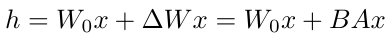
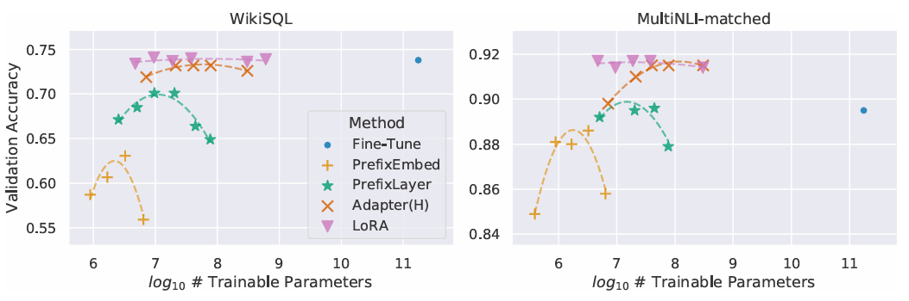
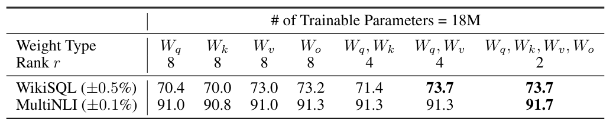
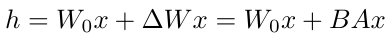
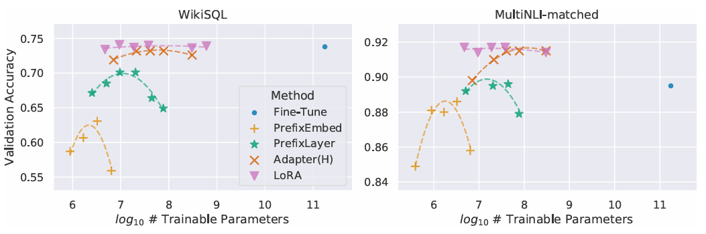
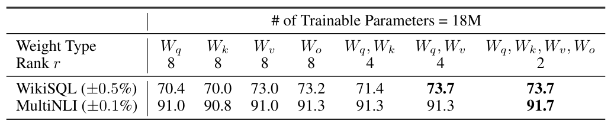

An Analysis of "LORA: LOW-RANK ADAPTATION OF LARGE LANGUAGE MODELS"
The paper titled "LoRA: Low-Rank Adaptation of Large Language Models" presents an innovative approach to fine-tuning large pre-trained language models for specific tasks. The primary focus of this paper is to address the challenge of adapting these massive models, such as GPT-3, which are often prohibitively expensive to fine-tune and deploy due to their size and the number of parameters.
LoRA represents a significant advancement in the democratization of Large Language Models (LLMs) and similar expansive models. This approach effectively bridges the gap for individuals and organizations with limited budgets and computing resources, enabling them to fine-tune state-of-the-art large models. Previously, such an endeavor was predominantly feasible for major corporations equipped with substantial financial and computational capabilities. LoRA, therefore, marks a pivotal shift, making advanced AI technologies more accessible and leveling the playing field in the realm of AI research and application.
Introduction
- Challenges of Fine-Tuning: Large-scale pre-trained language models, such as GPT-3, present challenges in deployment due to the extensive parameters involved in fine-tuning, making it computationally and storage-intensive.
- Drawbacks of Traditional Methods: Conventional approaches involving external modules for new tasks often introduce latency and compromise between efficiency and model quality, highlighting the need for more efficient adaptation strategies.
- Inspiration from Intrinsic Dimension: Taking inspiration from studies showing that over-parametrized models have a low intrinsic dimension, the proposed Low-Rank Adaptation (LoRA) approach leverages this concept to reduce the number of parameters needed during model adaptation.
- LoRA Efficiency: By optimizing rank decomposition matrices of dense layers' weight changes while keeping pre-trained weights frozen, LoRA achieves storage and compute efficiency. Even with models as large as GPT-3, a very low rank proves sufficient, making LoRA a practical and effective solution for efficient model adaptation.

 






Literature Review
Fine-Tuning (FT) is a common approach for adaptation. During fine-tuning, the model is initialized to the pre-trained weights and biases, and all model parameters undergo gradient updates.A simple variant is to update only some layers while freezing others. We include one such baseline reported in prior work (Li & Liang, 2021) on GPT-2, which adapts just the last two layers (FTTop2).
Bias-only or BitFit is a baseline where we only train the bias vectors while freezing everything else. Contemporarily, this baseline has also been studied by BitFit (Zaken et al., 2021).
Prefix-embedding tuning (PreEmbed) inserts special tokens among the input tokens. These spe cial tokens have trainable word embeddings and are generally not in the model’s vocabulary. Where to place such tokens can have an impact on performance. We focus on “prefixing”, which prepends such tokens to the prompt, and “infixing”, which appends to the prompt; both are discussed in Li & Liang (2021). We use lp (resp. li) denote the number of prefix (resp. infix) tokens. The number of trainable parameters is =dmodel (lp +li).
Prefix-layer tuning (PreLayer) is an extension to prefix-embedding tuning. Instead of just learning the word embeddings (or equivalently, the activations after the embedding layer) for some special tokens, we learn the activations after every Transformer layer. The activations computed from pre vious layers are simply replaced by trainable ones. The resulting number of trainable parameters is =L dmodel (lp+li),whereListhe number of Transformer layers.
Adapter tuning as proposed in Houlsby et al. (2019) inserts adapter layers between the self attention module (and the MLP module) and the subsequent residual connection. There are two fully connected layers with biases in an adapter layer with a nonlinearity in between. We call this original design AdapterH. Recently, Lin et al. (2020) proposed a more efficient design with the adapter layer applied only after the MLP module and after a LayerNorm. We call it AdapterL. This is very similar to another deign proposed in Pfeiffer et al. (2021), which we call AdapterP. We also include another baseline call AdapterDrop (R¨ uckl´ e et al., 2020) which drops some adapter layers for greater efficiency (AdapterD). We cite numbers from prior works whenever possible to maximize the number of baselines we compare with; they are in rows with an asterisk (*) in the first column. In all cases, we have = LAdpt (2 dmodel r+r+dmodel)+2 LLN dmodel where LAdpt is the number of adapter layers and LLN the number of trainable LayerNorms (e.g., in AdapterL).
Biography

|
Edward J. Hu is a PhD student advised by Yoshua Bengio at University of Montreal. He was a researcher at Microsoft before he was a graduate student where he was working on large scale deployment of GPT-3 and theories of infinetely wide networks. He was an AI resident at Microsoft Research Redmond. He has 2551 citations with a h-index of 12. |
|
|
Yelong Shen is a Researcher at Microsoft Redmond. Prior to this he was also a researcher at Tencent and a Research Software Engineer at Microsoft Redmond. He graduated with a PhD Degree in Computer Science from Kent State University. He has over 7000 citations and a h-index of 35 |
|
|
Phillip Wallis is a Senior Applied Scientist at AWS Security AI Research. Before this he was a Senior Applied Scientist at Azure AI - Microsoft, where he worked on LoRA. He graduated with a PhD Degree in Computer Science-Machine Learning from Oregon Health and Science University, where his research was primarily focused on Computer Vision and Healthcare AI. He has 1523 citations and a h-index of 4. |
|
|
Zeyuan Allen Zhu is a CoreML member at Meta FAIR labs. Before this he was a Researcher at Microsoft Research Redmond, where he co-authored LoRA. He graduated with a PhD degree in Computer Science from Princeton, where he worked on machine learning and optimization theory. He has graduated with a Master's Degree in Computer Science from MIT where he was advised by Silvio Micali. He has 11204 citations and a h-index of 44. |
|
|
Yuanzhi Li is a assistant professor in Machine Learning Department at CMU. He was a postdoc at Stanford and graduated with a PhD degree in Computer Science from Princeton. His bachelors was in Computer Science and Mathematics from Tsinghua University. He has over 12000 citations and has a h-index of 44 |
|
|
Shean Wang is a Principal Software Development Engineer at Microsoft. Before that he was a Senior Software developer at Microsoft. He graduated with a Master's degree in Computer Science from Beihang University |
|
|
Lu Wang, Associate Professor at the University of Michigan, was previously with Northeastern University until 2020. She earned her Ph.D. in Computer Science from Cornell University, supervised by Professor Claire Cardie. Lu specializes in natural language processing, computational social science, and machine learning, focusing on text summarization, language generation, and applications such as media bias analysis. Her work received awards, including a CHI 2023 best paper honorable mention. Lu's research is funded by NSF, AFOSR, IARPA, and industry partnerships. As ACL equity director, she co-founded SIGSUMM and holds over 2500 citations with an h-index of 29 |
|
|
Weizhu Chen is Vice President of Science at Azure AI, Microsoft. He is also an author of RAdam and Deberta. He recieved his PhD in Computer Science from Hong Kong University of Science and Technology. He has over 13000 citations with a h-index of 46. |
Social Impact
Fine-tuning enormous language models is prohibitively expensive in terms of the hardware required and the storage/switching cost for hosting independent instances for different tasks. We propose LoRA, an efficient adaptation strategy that neither introduces inference latency nor reduces input sequence length while retaining high model quality. Importantly, it allows for quick task-switching when deployed as a service by sharing the vast majority of the model parameters. While we focused on Transformer language models, the proposed principles are generally applicable to any neural networks with dense layers.
- Resource Efficiency: LoRA's ability to significantly reduce the number of parameters needed for model adaptation implies a potential reduction in computational and storage requirements. This could democratize access to advanced natural language processing capabilities, allowing a broader range of individuals, organizations, and applications to benefit from these technologies without extensive infrastructure.
- Energy Consumption: The more efficient use of computational resources can contribute to a decrease in overall energy consumption associated with training and deploying large language models. This aligns with growing concerns about the environmental impact of AI technologies and supports sustainable practices in the development of advanced language models.
Industry Applications of LoRA (Low-Rank Adaptation)
-
Healthcare:
Utilizing LoRA for fine-tuning LLMs for Medical Document Analysis to interpret and summarize medical documents, enhancing decision-making in patient care.
-
Finance and Banking:
Improving Automated Customer Support and Sentiment Analysis for personalized customer experiences and informed investment strategies.
-
Legal Industry:
Finetuning using LoRA in Contract Analysis and Legal Research to streamline legal workflows and reduce human error by using LoRA to finetune LLMs.
-
Natural Language Processing in Tech and AI:
Enhancing Personalized Digital Assistants and Search Engines for better user understanding and accurate information retrieval.
-
Education:
Adapting language models for Personalized Learning Materials to cater to individual learning styles and needs.
- LoRA can be combined with other efficient adaptation methods, potentially providing orthogonal improvement.
- The mechanism behind fine-tuning or LoRA is far from clear – how are features learned during pre-training transformed to do well on downstream tasks? We believe that LoRA makes it more tractable to answer this than full fine-tuning.
- We mostly depend on heuristics to select the weight matrices to apply LoRA to. Are there more principled ways to do it?
- Finally, the rank-deficiency of W suggests that W could be rank-deficient as well, which can also be a source of inspiration for future works.
- Innovative Approach: LoRA's strategy of using low-rank matrices for model adaptation is a significant departure from traditional full-model fine-tuning approaches. This innovation addresses a critical need in the field of NLP for more computationally efficient methods of adapting LLMs.
- Empirical Validation: The authors provide a comprehensive set of experiments demonstrating LoRA's efficacy. These experiments, conducted on models like GPT-3, show that LoRA can achieve comparable or superior performance to full fine-tuning while requiring significantly fewer trainable parameters.
- Practical Relevance: The method has high practical significance, especially for organizations with limited computational resources. It democratizes access to state-of-the-art LLMs by making their adaptation more accessible and less resource-intensive.
- Clear Presentation: The paper is well-organized and clearly written, making complex concepts accessible to readers. The authors do an excellent job of explaining the motivation, theory, and practical implications of their work.
- Generalizability Concerns: While the paper presents results on a range of NLP tasks, there is limited discussion/experiments on the generalizability of LoRA to other domains or model architectures beyond language models.
- Theoretical Depth: The paper could benefit from a more in-depth theoretical analysis of why low-rank adaptations are effective for these models. A deeper exploration of the theoretical underpinnings would strengthen the paper's contributions.
Follow-on Research
There are many directions for future works such as:
Peer-Review
Reviewer: Bhavya Pranav Tandra
Strong Accept
Paper Summary:The paper introduces Low-Rank Adaptation (LoRA), a novel approach to adapt large pre-trained language models (LLMs) for specific tasks. LoRA strategically updates only a small fraction of the parameters, freezing the model's pretrained parameters, reducing the computational burden typically associated with fine-tuning such large models. The method involves injecting trainable rank decomposition matrices into the model's layers, thereby maintaining the pre-trained weights while enabling efficient adaptation.
Strengths:"LoRA: Low-Rank Adaptation of Large Language Models" is a highly valuable contribution to the field of AI. It addresses a pertinent challenge in the adaptation of LLMs with a novel, efficient, and effective method. The paper is well-written and thoroughly researched, offering both practical utility and a foundation for future research. While there are areas for further exploration, particularly in theoretical understanding and broader comparisons, the strengths of the paper significantly outweigh its limitations.
References
[2] Neil Houlsby, Andrei Giurgiu, Stanislaw Jastrzebski, Bruna Morrone, Quentin de Laroussilhe, Andrea Gesmundo, Mona Attariyan, and Sylvain Gelly. Parameter-Efficient Transfer Learning for NLP. arXiv:1902.00751 [cs, stat], June 2019. 00751.
[3] Xiang Lisa Li and Percy Liang. Prefix-Tuning: Optimizing Continuous Prompts for Generation. arXiv:2101.00190 [cs], January 2021.
[4] Armen Aghajanyan, Luke Zettlemoyer, and Sonal Gupta. Intrinsic Dimensionality Explains the Effectiveness of Language Model Fine-Tuning. arXiv:2012.13255 [cs], December 2020.
[5] Ashish Vaswani, Noam Shazeer, Niki Parmar, Jakob Uszkoreit, Llion Jones, Aidan N Gomez, Łukasz Kaiser, and Illia Polosukhin. Attention is all you need. In Proceedings of the 31st In ternational Conference on Neural Information Processing Systems, pp. 6000–6010, 2017.
Team Members
Tarun Reddy Thandu, Bhavya Pranav Tandra